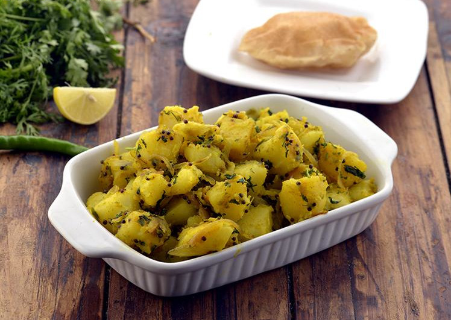

Aloo Bhaji with Puri

Description
Potato Bhaji also called Aloo Bhaji is made in
every household in India. Easy to prepare,
Aloo Bhaji is made from a tangy combination
of boiled potatoes and sautéed onions spiced
with chillies.
Ingredients
For Aloo Bhaji:
- 1½ cups boiled potatoes
- 1 tbsp oil
- 1 tsp mustard seeds
- 4 curry leaves
- ½ cup sliced onions
- ½ tsp turmeric powder
- 1½ tsp green chilli paste
- 2 tsp lemon juice
- 2 tbsp chopped coriander
- salt
For Puris
- 1 cup whole wheat flour
- 2 tsp oil
- ¼ tsp salt
- oil for deep-frying
Steps
For Aloo Bhaji:
- Heat the oil in a broad non-stick pan or
kadhai, add the mustard seeds and curry
leaves and sauté on a medium flame for
30 seconds.
- Add the onions and sauté on a medium
flame for 2 minutes.
- Add the turmeric powder and potatoes,
mix well and cook on a medium flame for
1 to 2 minutes, while mashing it lightly
with a back of the spoon.
- Add the green chilli paste, lemon juice,
coriander and salt, mix well and cook on
a medium flame for 1 minute, while stirring
occasionally. Keep aside.
For Puris:
- Combine the whole wheat flour, oil and salt
all and knead into a stiff dough using approx.
5 tbsp of water.
- Cover and keep aside for 10 to 15 minutes.
- Divide the dough into 12 equal portions and
roll out each portion into a 75 mm. (3")
diameter round.
- Heat the oil in a deep kadhai and deep-fry
the puris a few at a time till they turn
golden brown in colour from both the sides.
- Drain on absorbent paper and serve immediately.